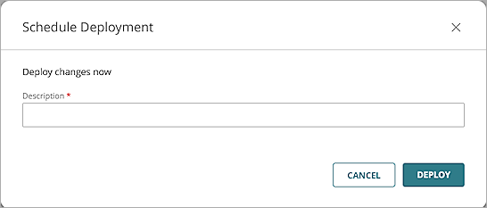

This guide demonstrates how to integrate WatchGuard Cloud with Purple Wi-Fi to enable guest users to authenticate to a captive portal.
Before you begin, make sure your access point is activated with a WatchGuard Standard Wi-Fi or USP Wi-Fi Management license and registered with WatchGuard Cloud. For more information, go to Activating an Access Point.
Contents
Platform and Software
The hardware and software used in this guide include:
- Purple:
- Purple Wi-Fi Management Portal Account
- WatchGuard:
- WatchGuard AP330
- WatchGuard Cloud Account
- Wireless client devices
Additional charges might apply to use Purple Wi-Fi.
Test Topology
For more information about network port configuration for communications between your access points, WatchGuard Cloud, and Purple, go to the Purple support documentation and the WatchGuard Cloud documentation.
Purple Wi-Fi Configuration
Get the WatchGuard Access Point Device Settings
Make sure that you record the name and MAC address of each WatchGuard access point you want to use to integrate with the Purple Wi-Fi.
To get the settings for each WatchGuard access point:
- Log in to your WatchGuard Cloud account.
If you are a service provider, make sure you have allocated the activated access point to a subscriber account in WatchGuard Cloud. - Select Configure > Devices.
- Select an access point.
- Click Device Settings.
- Copy the device MAC address.
Add a Location (Venue) in Purple Wi-Fi
- Log in to the Purple Wi-Fi Management Portal.
- Click .
- Select Management > Locations (or Venues, depending on the browser language settings).
- Select Venues and Groups.
- Click > Add venue.
- Follow the instructions in the wizard to add a new venue.
- Select your venue from Venues and Groups.
- From your venue, select Hardware.
- Click Add hardware > Add new hardware.
- In the Name text box, type a name.
- From the Hardware type drop-down list, select WiFi AP.
- From the WiFi AP type drop-down list, select WatchGuard Wi-Fi Cloud AP.
- In the WiFi AP Mac Address text box, type or paste the MAC address of the WatchGuard AP.
- Click View Manual Online or Download Manual to view the configuration steps and information required for the WatchGuard Cloud configuration.
This information includes the IP addresses and the shared secret of the Purple Wi-Fi RADIUS servers that you require for your WatchGuard Cloud Configuration.
- Click Save details.
WatchGuard Cloud Configuration
For detailed information on Wi-Fi in WatchGuard Cloud deployment, go to Get Started with Wi-Fi in WatchGuard Cloud.
Access points can have two different types of settings:
- Device-level settings — Settings that you apply individually to each access point.
- Access Point Site settings — Access Point Sites enable you to create SSID settings and apply them to multiple access points that subscribe to the site.
The Captive Portal feature is only available when setting up Access Point Site settings.
Add a RADIUS Authentication Domain to WatchGuard Cloud
To configure a RADIUS authentication domain in WatchGuard Cloud:
- Log in to your WatchGuard Cloud account.
If you are a service provider, make sure you have allocated the activated access point to a subscriber account in WatchGuard Cloud. - Select Configure > Shared Configurations > Authentication Domains.
- Click Add Authentication Domain.
- In the Domain Name text box, type a domain name. In this example, we use purple.primary.
- Click Next.
- In the Add servers section, select RADIUS.
- From the RADIUS Server Type drop-down list, select RADIUS Authentication Server.
- From the Type drop-down list, select Host IPv4.
- In the IP Address text box, type the primary IP address of the Purple Wi-Fi RADIUS server.
- In the Port text box, type the authentication port number of the Purple Wi-Fi RADIUS server.
- In the Shared secret text box, type the shared secret of the Purple Wi-Fi RADIUS server.
The Purple Wi-Fi RADIUS settings and other integration information are provided in the manual for the WatchGuard Cloud configuration available in the Purple Wi-Fi Configuration.

- Click Save.
- Click Done.
- From the authentication domain list, select your domain name. In this example, purple.primary.
- From the Update Authentication Domain page, select Servers.
- Click Add Server.
- Repeat steps 6 -12 to create a RADIUS Accounting Server with port 1813.
The authentication and accounting services are on the same RADIUS server and run on different ports. - (Optional) Repeat these steps to create a secondary RADIUS server.
Configure SSID Settings for an Access Point Site
To configure SSID settings for an Access Point Site in WatchGuard Cloud:
- Log in to your WatchGuard Cloud account.
If you are a service provider, make sure you have allocated the activated access point to a subscriber account in WatchGuard Cloud. - Select Configure > Shared Configurations > Access Points Sites.
- Select an existing site, or add a new site.
- In the Subscribed Devices tab, make sure your access points are subscribed to the site.
- From the Configuration Details tab, in the Wi-Fi Networks section, click SSIDs.
- Click Add SSID.
- In the SSID Name text box, type an SSID name. In this example, we use Guest-Purple.
- Select the Broadcast SSID check box.
- From the SSID Type drop-down list, select Guest.
- From the Radio drop-down list, select 2.4 GHz and 5 GHz.
- From the Security drop-down list, select Open.
- In the Network section, select NAT. Configure the IP address range and DNS server details:
- Local IP Address (Gateway)
- Subnet Mask
- DHCP Pool Start IP Address
- DHCP Pool End IP Address
- Lease Time
- Primary DNS Servers
- Secondary DNS Server
- Click Save.
- To apply the configuration to your access points, click Schedule Deployment in the banner at the bottom of the page.
- Type a Description for the deployment.

- Click Deploy, then click Close.
Configure an Authentication Domain for an Access Point Site
To configure Authentication Domain settings for an Access Point Site:
- Log in to your WatchGuard Cloud account.
If you are a service provider, make sure you have allocated the activated access point to a subscriber account in WatchGuard Cloud. - Select Configure > Shared Configurations > Access Point Sites.
- Select the Access Point Site where you configured your SSID in the SSID settings section.
- Select the Configuration Details tab.
- In the Authentication section, click Domains.
- Click Add Authentication Domain.
- From the Select an existing Authentication Domain drop-down list, select the domain you created in the Add RADIUS Authentication Domain to WatchGuard Cloud section.
- From the RADIUS Authentication Server drop-down list, select the primary or secondary RADIUS authentication server.
- From the RADIUS Accounting Server drop-down list, select the primary or secondary RADIUS accounting server.

- Click Save
- To apply the configuration to your access points, click Schedule Deployment in the banner at the bottom of the page.
- Type a Description for the deployment.
- Click Deploy, then click Close.
Configure a Captive Portal for Guest SSID
To add a captive portal to an SSID, you must enable the Captive Portal option in an Access Point Site:
- Log in to your WatchGuard Cloud account.
If you are a service provider, make sure you have allocated the activated access point to a subscriber account in WatchGuard Cloud. - Select Configure > Share Configurations > Access Point Sites.
- Select the Access Point Site where you configured your SSID in the SSID settings section.
- Select the Configuration Details tab.
- In the Portal widget, click Captive Portal.
- Click Add Captive Portal.
The Add Captive Portal page appears. - From the SSID drop-down list, select the SSID you created in the Configure SSID Settings for an Access Point Site section.
- From the Captive Portal Type drop-down list, select Third-party hosted.
- Click Next.
- In the Splash Page URL text box, type the Purple Wi-Fi splash page URL.
For example: https://region1.purpleportal.net/access/ - In the Shared Secret text box, type the shared key for Purple Wi-Fi. Verify the shared secret with the current Purple Wi-Fi documentation for the Wi-Fi in WatchGuard Cloud access point.
- From the Authentication Domain drop-down list, select your authentication domain you created in the Add RADIUS Authentication Domain to WatchGuard Cloud section.
- In the Walled Garden section, click Add Destination to add the basic configuration domains provided by Purple Wi-Fi.
To support social network logins, make sure you add these domains for each network you plan to support.- Basic Configuration
- region1.purpleportal.net
- venuewifi.com
- openweathermap.org
- cloudfront.net
- stripe.com
- Facebook
- facebook.com
- fbcdn.net
- akamaihd.net
- connect.facebook.net
- Twitter
- twitter.com
- twimg.com
- LinkedIn
- linkedin.com
- licdn.net
- licdn.com
- Instagram
- instagram.com
- Basic Configuration
- Leave the other options at their default settings.
- Click Finish.
- Return to the Configuration Details page of the Access Point Site.
- To apply the configuration to your access points, click Schedule Deployment in the banner at the bottom of the page.
- Type a Description for your deployment.
Test the Purple Wi-Fi Integration
To test the Purple Wi-Fi integration with WatchGuard Cloud:
- Use a wireless client to connect to the SSID you created in WatchGuard Cloud.
The user browser is redirected to the Purple Wi-Fi splash page. - Complete the requested information to connect through the splash page.
The configured Landing Page or specified external page appears. - Access the Internet through the captive portal.
For more information about the wireless client details, from the Purple Wi-Fi user interface, select Marketing > CRM > View